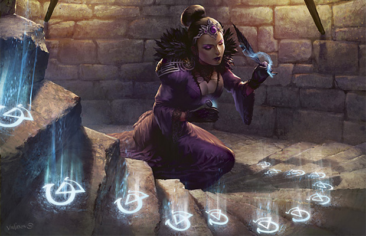
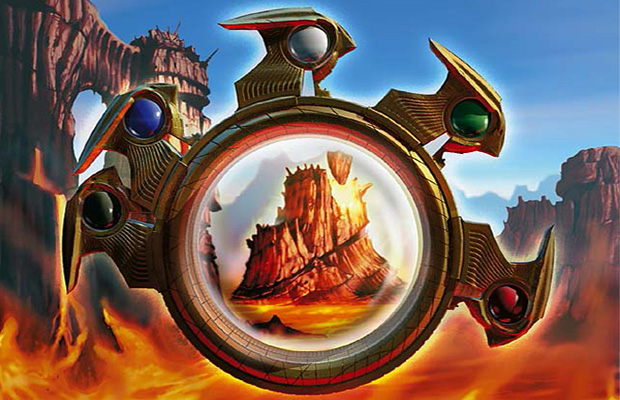
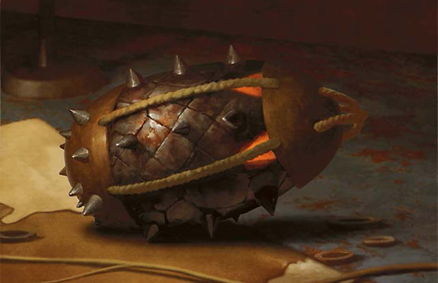
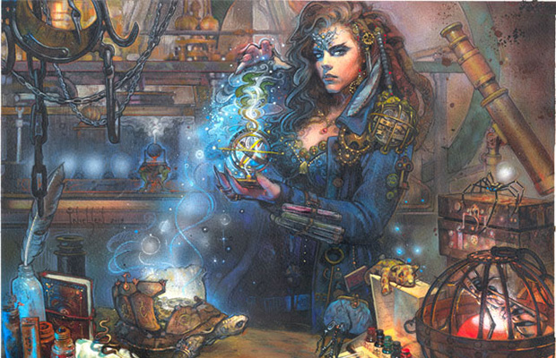
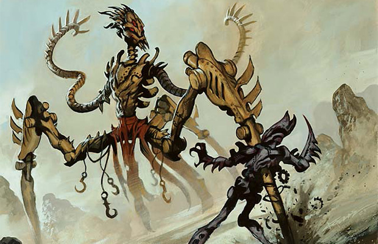
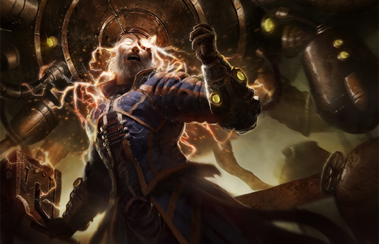

作者：Mark Rosewater
译者：Pa_Cha
原文地址：https://magic.wizards.com/en/articles/archive/making-magic/nuts-bolts-iteration-2014-03-03
译文地址：https://tieba.baidu.com/p/4064514737
我每年都会撰写一篇名为螺母和螺栓的文章。这个系列的文章旨在帮助那些对自定义卡牌系列感兴趣的读者。今天带给大家的是这个系列的第六篇文章。为了能让所有人都有兴趣读下去，我还会在文章中讲述一些我们设计卡牌背后的故事。在开始前，让我们先来回顾一下前几篇文章的主要内容：
螺母和螺栓1：卡牌代码：我在开篇之作中向大家介绍了卡牌代码，以及如何利用它创建卡牌文档。卡牌代码虽然属于设计中的枝节部分，但却十分重要。
螺母和螺栓2：设计骨架：第二篇文章讲述了如何利用这些卡牌代码建立设计骨架——设计者用来整合设计资源的工具。
螺母和螺栓3：设计骨架的填充：第三篇文章介绍了如何根据需要对设计骨架进行填充。不过这篇文章只讲述了普通牌的填充。
螺母和螺栓4：更高稀有度的卡牌：第四篇文章帮助你用其他稀有度的卡牌完成了对设计骨架的填充。
螺母和螺栓5：初始对局测试：第五篇文章讲述了在普通牌填充完毕后，就可以开始对局测试了（我首先带领大家完成了全部稀有度卡牌的填充是出于连贯性的考虑，其实我们通常都是在普通牌填充完毕后便开始进行对局测试）。这篇文章谈到了对局测试的目的以及如何根据需要从中提取信息。
现在我们已经完成了设计骨架中普通牌的填充，并已经完成了一些对局测试。那么下面应该做什么了呢？
重新审订概述
在上篇螺母和螺栓文章中，我提到了重新审订的概念。今天我会进一步介绍重新审订概念以及如何利用它将你的卡牌文档提升到一个新的层次。

那么就让我们从最基本的问题开始：什么是重新审订？重新审订就是重复做一件事情，并利用每次获得的反馈不断进行改进的过程。我已经提到过好几次Malcom Gladwell在《异类》一书所提出的“一万小时法则”。在那本书中，Malcom试图揭示每个人所具有的天赋。为什么有些人能够成为主宰一场音乐会的钢琴大师，而有些人却连半首曲子都弹不下来？
是与生俱来的？还是后天训练的功劳？或者是运气好？具备多项才能的大师们具有哪些共同的特质呢？答案就是时间加奉献精神。一个擅长做某件事的人在达到这种境界前会一遍遍地重复去做这件事——一万个小时地重复去做。但很多人都忽略了“一万小时法则”中很重要的一部分内容：并不是单纯一万小时的重复，而是一万小时不断吸取从重复中获得的反馈经验。这一点极其关键。
光是一遍遍做同一件事情还不够，你还要在此过程中不断学习。无论你的某个想法在实施起来是否成功，都要从中获得反馈并加以改进。而反馈是你开启这个重复过程的动力。这就是重新审订的概念。
重新审订是设计一张优秀卡牌的核心。你将所有设计资源整合成一个设计骨架，然后对其进行对局测试并利用对局测试中所进行的记录对卡牌文档进行修改。修改内容取决于你和你的团队在每次对局测试中所产生的反馈。在卡牌文档经修改后与反馈相适应时，便开始新一次的对局测试。这个循环一直维持到设计工作的完成。这种测试、修改、测试、修改的过程便是万智牌设计的基本模式及核心所在。
关注点、人
随着卡牌系列的不断完善，评估它设计状况最简单的办法就是对其关注点进行考量。这些关注点依次为：
每张单卡
在设计工作的一开始，你会孤立地看待每张单卡的强度。那时不用考虑卡牌间的相容性，而只需判断其是否可用。而到了重新审订的时候，每张单卡间都是相互依存的关系，也就是说它们相互间会产生互动。所以，设计工作一开始时的关注点就是每张单卡本身。

举例来说，在你刚开始对局测试的时候，卡牌系列中应该含有一到三个不同机制（顺便说一句，请不要过早加入过多机制，因为关注点的会因不同内容过多而无法集中）。你在对局测试早期的任务并不是去确定“所有机制整体看起来是否可行？”而是确定“带有机制的每张单卡是否可行？”
下面我来解释一下关注每张单卡为何很重要。假设你设计了十五张具有某一机制的单卡。其中十四张的效果都很差，而只有一张效果极佳。那么这是一次好的对局测试吗？答案是非常肯定得。为什么呢？原因有二：
首先，每当你通过某种方式获得一个非常强的数据信息时，就可以很容易地从中提取反馈结果。既然有十四张牌效果都很差，那么在设计新机制时就不要再采取与此前相同的方式了。既然只有一张牌效果极佳，那么以后就设计些这样的单卡。
第二，尝试新机制的目标就是要确定它是否可行。这个机制不需要对于大多数卡牌来说都可行，而是对一些卡牌可行——哪怕只有一张。这样的结果显示出这个设计空间的可行面太窄了，并能让你确定接下来的工作目标。
纵观这次对局测试的数据，十四张失败的卡牌和一张成功的卡牌使得这个机制看起来是一个失败的设计。但如果逐个去看每一张单卡的话，那张带有新机制的成功单卡会格外引人注目。达到这个效果对于对局测试的早期来说就足够了。初始对局测试就是发现系列潜力的过程。这个阶段你犯错误的方式会有很多，相比而言不犯错误的方式会相对较少。对局测试就是为了探索和发现那些正确的方式。
这也是你为何要从关注每一张单卡做起的原因。除了“这张单卡本身可行吗？”之外，不要关注其他任何问题。对于一位菜鸟设计师来说，能够填满系列中每张单卡的位置就已经很好了（因此我建议大家使用全普通牌开始对局测试）。在每次对局测试结束后，都要把每一张单卡在对局中的有趣程度记录下来。记录方式很简单，“是”、“否”、“不定”或“未用到”。在下一轮对局测试中（你在每次进行重新审订前通常都要进行几盘对局测试），要着重测试那些“不定”或“未用到”的单卡，以便将它们的状态确定为“是”或“否”。当然，最好能让参与对局测试的每个人都这样做。
在这里我再把去年那篇螺母和螺栓文章的内容简要叙述一下。对局测试与一般的万智牌对局不同，你的目标并不是取胜。你要去体验系列中的每张单卡。也就是说，在不同的对局测试中要选用不同的颜色。把你想去测试的单卡放入套牌中，即便它显然并不好用。除非遇到那些对使用数量有所要求的单卡，否则尽量多地使用不同单卡去构组套牌。早期对局测试的目标就是尽量去使用不同的卡牌。不过请注意，这也并不是说刻意去构组那种无法取胜的套牌，你还是需要使用一些正常万智牌对战中所需的基本技巧，然后依靠自己的经验对未知的效果进行抉择。
一旦你完成了对局测试，比较好的情况就是获得了记录为“是”和“否”的卡牌文档各一份。更理想的情况为，你对每张单卡都得到了多种回馈。如果一张单卡所有人或多数人都认为“是”的话，就将其保留。如果一张单卡被标注了“否”，你需要去确定是哪里做错了，然后去进行修改。不过把一些记录为“否”的单卡单独放在一边也可以。如果直觉告诉你这些单卡还具有可用的潜力，那么再对其多进行一些测试也是可以的。不过倘若这张单卡在修改后的对局测试中依旧被记录为“否”的话，一定程度上就表示你应该将它剔除了。
两张牌之间的互动
一旦你确定了相当数量的可用单卡后，就可以进行下一步了——确定它们之间的互动情况。这一次你将会建立两张标有“Combo”和“Bombo”的单卡名单。当你发现两张单卡互动良好时，便在它们每一张上标记“Combo”，反之则标记“Bombo”。请注意，很多单卡间的互动情况既不很好，也不相抵触。对于这些牌，什么都不标记即可。不断进行对局测试知道完成这两份名单的填写。

所谓互动良好具体如何理解呢？它指的是当某两张牌同时被使用时，效果会比将它们单独使用效果更好；它指的是当你握有其中一张牌，并在抓到另一张时会很开心；它指的是两张牌之间存在一些配合，但这个配合不需要非常强大。
如果很多人都给同一张牌标注为“Bombo”，那就将它剔除掉。或许那张牌的个体强度很高，但不要对它有任何怜悯。我很喜欢的一句话就是“一场戏永远比不上整部电影重要，一句台词也永远比不上一场戏重要。”如果一张单卡不能让对局变得更有趣，就需要被剔除掉。我并非主张将那些互动效果不明显的卡牌剔除掉，而是建议将与大多数卡牌都没有良好互动的卡牌去掉。
对局测试就是一个对卡牌系列中的卡牌间互动情况加深了解的过程。如果有两个机制一直出现在“Bombo”名单中，就预示着它们中的一个需要被剔除出去。
之所以在这个阶段要关注两张卡牌间的互动情况，因为它将让设计者意识到整个系列的走向。对此一个常见的错误就是，设计者强迫这个系列按照自己所想的方向而非对局测试所显现出来的方向去发展。请牢记你需要参考的反馈信息是来自于对局测试，而不是你自己的揣测。我见过新手设计师所犯的一个巨大错误就是，他们认为自己对卡牌系列的理解要比对局测试所显示 结果更正确。如果你是正确的，那么对局测试会证明给你看。如果它证明不了怎么办呢？那就说明你是错的。
机制主题
现在卡牌之间已经可以建立的很好的互动。下面我们就该开始检验更为宏观的机制主题了。在这个阶段的对局测试中，我建议先将系列中每个机制的主题写下来，包括全部关键词异能、卡组、出现在多张卡牌上的机制规则叙述（那些尚未形成关键词的机制）等。然后，让每位测试者记录他们总共拿到了几张隶属于每个机制的卡牌。

这个阶段对局测试的重点在于，注意隶属于每个机制的卡牌效果如何。这些机制是否产生了你所希望的效果？那些卡牌被使用到了，哪些没有？你所关注的那些机制是否会驱使玩家去构组主题套牌？这些机制是否能带给玩家你想要的感觉？你是否漏掉了一些能让某个机制变得更好的元素？
在这个环节的重新审订工作中，你要逐渐了解卡牌系列的主机制主题是否得到了体现。这种体现一部分取决于机制主题是否与你的意图相符，另一部分取决于系列中的卡牌能否对主题给予强有力的支持。突出机制主题的一个办法就是利用主题构建预组套牌。使用它进行对局测试就可以做到直接关注核心问题。
在拿到反馈数据后，你就可以确定当前系列中还缺少那些元素。此时你经常需要做的就是设计新单卡来填补所发现的空缺，或剔除那些对主题没有任何提升作用的卡牌。
另外，从这个环节起你还要确认机制主题已经遍布于所有颜色之中。一个卡牌系列会拥有很多机制，但对于各种颜色来说，每个机制的分布并不均衡。你需要做的就是让不同颜色组合所具有的机制主题能带给玩家各不相同的感觉。
为了做到这一点，你必须在每个颜色最擅长的异能之间做出选择。毕竟要想建立关注点，就必须得做出选择。只有每种颜色在表现主题机制上各司其职，才能让这个卡牌系列更容易被人记住和识别出来，游戏的可玩性也会更高。你要保证让卡牌系列最具辨识性的主题寓于普通牌之中。而且此时你也要开始把每个颜色组合带入到游戏对战中去考虑了。因为接下来我们就该着重关注于此了。
主题互动
下一环节的对局测试将主要关注机制元素间的互动情况。从重新审订的第一步到第四步，是按照从孤立到联系的顺序进行的。现在我们要做的就是把各个孤立的部分结合在一起放到对战中观察它们之间的互动情况。然后就像第二步那样，对主题的互动情况加以记录和标注。

在这个环节中，你需要特别关注的系列所含主题被放在一起后的运作情况。如果它们的兼容性不佳，你就需要进行调整直到解决问题为之。在万智牌诞生早期，我们对新系列中含有两个新机制就心满意足了。但如今，我们需要的是系列中多个机制要能做到相互配合，并且看重它们的互动情况更甚于各自的运作情况。
主题互动是一个卡牌系列不可或缺的，如果它还尚未形成，你就需要设计出能够将主题相连接的卡牌。制作一个优秀的卡牌系列一定程度上需要以具有粘合剂作用的卡牌作为支持。只有如此，这个卡牌系列的构成才会足够紧密，而不像是把一堆零散的组件撮合到一起。我想指出的一点是，一般来说，你在创建一个机制时就会把一些配合方式内嵌其中了，但随着卡牌系列各部分的变动，你需要对改变部分与机制配合的效果进行检查。
此时你还需要开始考虑每种颜色都各自擅长些什么。每个颜色的主题是什么？用来辨识它们的机制分别是哪些？它们分别能做的哪些事情是其他颜色所做不到的？要求更高一些的话，你还可以开始问自己，某个颜色在同另一个颜色相配时会有怎样的效果。以我们为例，我们在设计中总是会着重观察五个基本色以及十对双色色组之间在轮抓时的互动情况。我们在交付开发的设计文档中也会包含这些测试的结果。
可见，卡牌设计的重新审订过程是从单卡开始，然后逐渐辐射到整个系列。从设计思路角度看也是如此，从较窄的关注点慢慢扩大到整个系列。
关注要点
在重新审订过程中，还有其他几个要点需要注意：
复杂度：每当你尝试解决问题时，都会不由自主地添加元素。元素的增加会提高场面形势的复杂度。因为添加内容是解决问题最快的办法。但一般来说，最好的解决办法（最快的办法很少会是最好的办法）应该是去除一些内容（至少是替换一些内容）。所以，在重新审订时，你必须时刻关注卡牌系列的复杂度。这就意味着，你应该为简单的内容留出一定的空间。
数量：这点和上一点有些关联性。大多数设计者在重新审订过程中都容易添加内容，而不是扣除内容。原因很简单，因为他们很喜欢自己的创造的内容。所以一旦发现了新问题，他们就会再造出新的内容来解决它。所以牢记有新内容加入，就要有内容退出。加入新内容的代价应该是失去旧内容。借用毕加索的的话来说就是：创作行为与毁灭行为是同时存在的。倘若卡牌系列需要某些新内容，通常就是某些内容需要被剔除的信号。
明晰：设计工作可能发生一大问题就是失去方向感。设计者很容易在每个步骤的工作中渐渐偏离原有方向，且自己还意识不到。所以总要留出足够的时间擦亮双眼来审视当下的设计方向。另一个好办法就是保留修改前的设计骨架，以便回头查看每个步骤所进行的改动。对于每一项改动，你都需要自问改动的原因及需要，并确认其是否符合初始的设计方向。然而，你经常会发现改动前的内容其实更加符合原始设计方向。
新颖：重新审订可能造成的最大问题就是由于内容的去除，导致卡牌系列失去设计者为它定下第一印象。那些看起来新颖的内容在你进行多次对局测试后也会变成旧内容。所以不要总是一味地寻找新内容，应该经常邀请此前未参加过对局测试的人来感受卡牌系列的第一印象。重新审订的重要性并非体现在有多少新内容被添加进来，而是要确保那些被留下的内容都是这个系列所需要的。

撰写关于卡牌系列设计的系列文章最大的问题就在于，随着内容的展开，菜鸟设计者会越来越难以接受和执行。举例来说，每个人搭建出的设计骨架都大同小异，但重新审订的过程一定会大相径庭。今天这篇文章就是提供一些重新审订过程中的主要思路，大家可以根据这些总结出适合自己的重新审订方式。
结束语
我最后一点忠告就是要在对局测试中乐于听取别人的建议，即便那些建议并不是你所期待的。或者在进行修改时，为了满足系列主题的需要，不要吝惜剔除一些你很喜欢的内容。设计工作虽然充满乐趣，但也难免会有伤心时刻。最重要的就是要关注那些对系列影响最大的部分，从而有效地通过重新审订不断完善卡牌系列的质量。
我向来很愿意听到别人的反馈。希望大家通过电邮或在我社交网站留言的方式发表您对本文的看法。